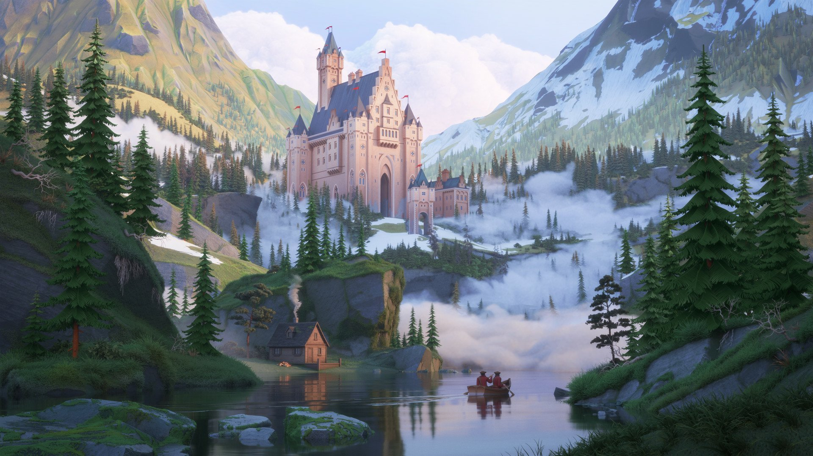

Fantasy is a genre that commonly features magic, mythical creatures, supernatural abilities, and imaginary worlds. While it does not have to include any of these, fantasy is where the work of fiction can be fully expressed

High fantasy usually takes place in a completely fictional world with its own history, cultures, and magic.
Dark fantasy combines fantasy elements with darker themes and sometimes elements of horror.
Urban fantasy places magical or supernatural elements into a modern or familiar setting.